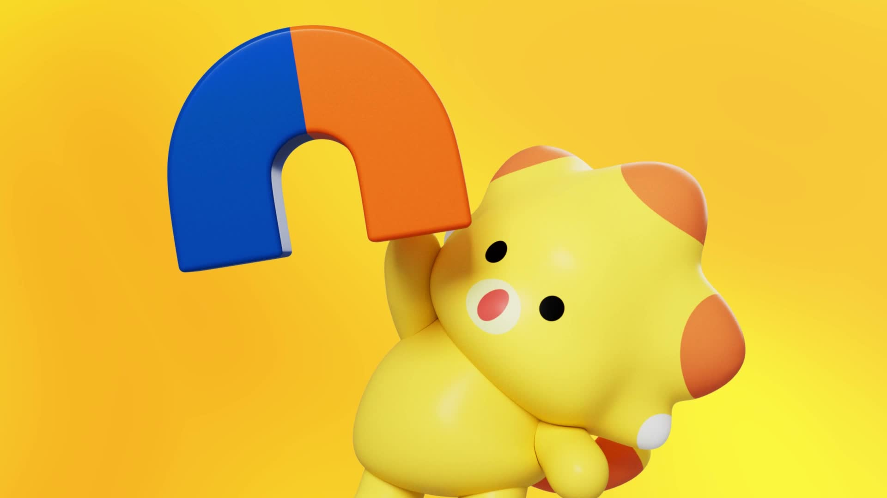
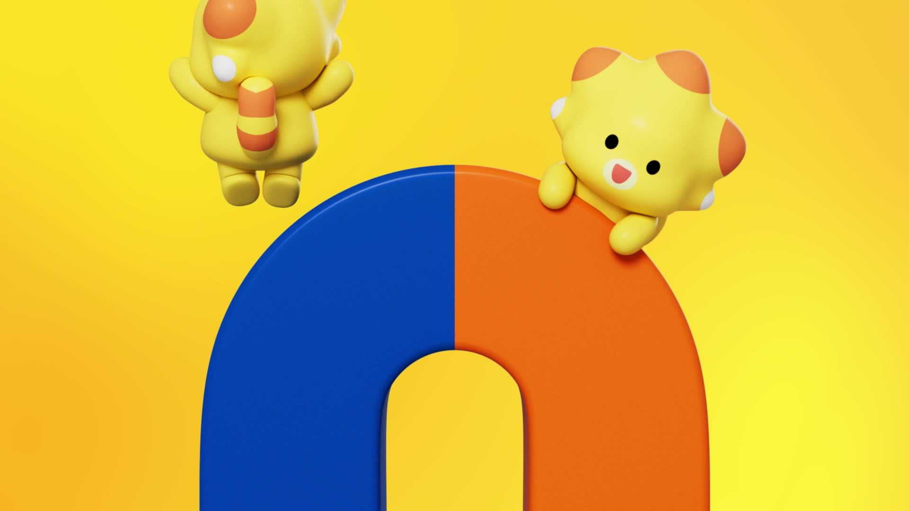
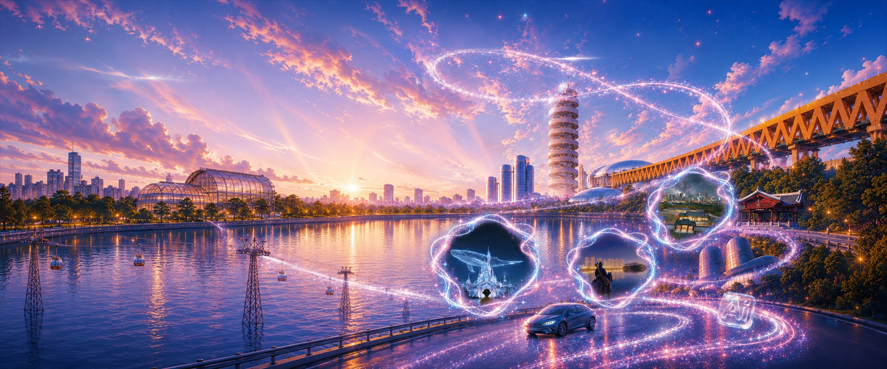
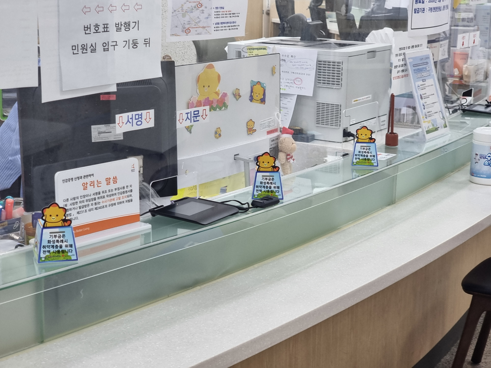

{kind=link}

2025 대상 · 김세영 · 업로드 2025.11.16
우린 빛나, 화성 (We Shine, Hwaseong)
공모전 공식 갤러리에서 선정한 광고 구성 참고작입니다. 코리요 외형 기준 영상과는 구분합니다.
YouTube 원문 보기 ↗2026 화성 AI 영상 공모전 홈페이지의 3D 코리요를 중심으로, 최근 공식 영상과 홈페이지 자료를 다시 모았습니다.
수집 범위 2024.09.17–2026.09.17Flow에는 먼저 위의 코리요 단독 PNG를 넣으세요. 아래 특징은 실제 공모전 이미지를 관찰한 메모입니다.


화성특례시 공식 홍보 동영상 · 게시일 2025.01.03 · 36.22초 · 1920 × 1080
앞부분의 3D 캐릭터 표정·몸통·꼬리를 외형 참고로 보세요. 확인한 장면은 00:02와 00:05입니다. 공모전 PNG와 렌더링 질감이 다르므로 한 작품의 스타일 기준은 하나로 정합니다.
화성 AI 공모전 홈페이지가 2025년 수상작으로 소개한 YouTube 영상입니다. 두 영상 모두 YouTube 원문에서 업로드일 2025.11.16을 확인했습니다. 코리요 출연 여부는 확인하지 않았으므로 광고 구성 참고로 구분합니다.
2025 대상 · 김세영 · 업로드 2025.11.16
공모전 공식 갤러리에서 선정한 광고 구성 참고작입니다. 코리요 외형 기준 영상과는 구분합니다.
YouTube 원문 보기 ↗
2025 우수상 · 모드어스 AI 스튜디오 · 업로드 2025.11.16
공모전 공식 갤러리에서 선정한 광고 구성 참고작입니다. 코리요 외형 기준 영상과는 구분합니다.
YouTube 원문 보기 ↗공모전 수상작 갤러리 ↗ · 화성특례시 공식 YouTube ↗
「코리요의 타임기차 - 과거와 미래가 공존하는 도시, 화성시」 · 박수연 · 2025 이미지 부문 최우수상. 공식 갤러리에 등록된 창작 활용 사례이며 캐릭터 원본 설정은 아닙니다.
수상작 원문 보기 ↗
2026 공모전 현행 사용본공모전 사이트의 메인 비주얼입니다. 색감과 화면 구성 참고이며 실제 장소의 정확한 기록 사진으로 취급하지 않습니다.
공모전 홈페이지 ↗
공식 보도자료 · 2026.05.26민원창구에서 실제 활용되는 2D 코리요 사례입니다. 최근 자료라도 2D와 3D 형태가 함께 쓰이므로 이번 Flow 작업에서는 공모전 PNG를 기준으로 유지합니다.
화성특례시 보도자료 ↗| 자료 | 날짜 기준 | 용도 |
|---|---|---|
| 공모전 코리요 PNG | 2026 대회 현행 사용 / 최초 제작일 미공개 | Flow 외형 기준 |
| 코리요 공식 MP4 | 게시 2025.01.03 | 3D 형태·움직임 참고 |
| 나눔 저금통 사진 | 게시 2026.05.26 | 최근 활용 사례 |
| 공모전 YouTube 수상작 | 수상연도 2025 / 업로드 2025.11.16 | 광고 구성 참고 |
수집 확인일 2026.09.17. 게시일 없는 기존 캐릭터 소개 페이지는 최신 자료의 근거로 사용하지 않았습니다. 본 페이지는 비공식 참고 자료이며 새 공식 모델시트가 아닙니다. 원본·영상 프레임·창작 프롬프트를 구분해 수록했습니다.
이미지·영상·수상작의 권리는 각 원 제공자에게 있습니다. 공모전 홈페이지 이미지와 영상에 기존 2D 캐릭터의 공공누리 조건을 일괄 적용하지 않습니다. 참고 팩에는 출처와 자료별 용도를 포함했습니다.
출처 문구 저장 ↓ · 새 프롬프트 저장 ↓ · 자료 목록{kind=link}